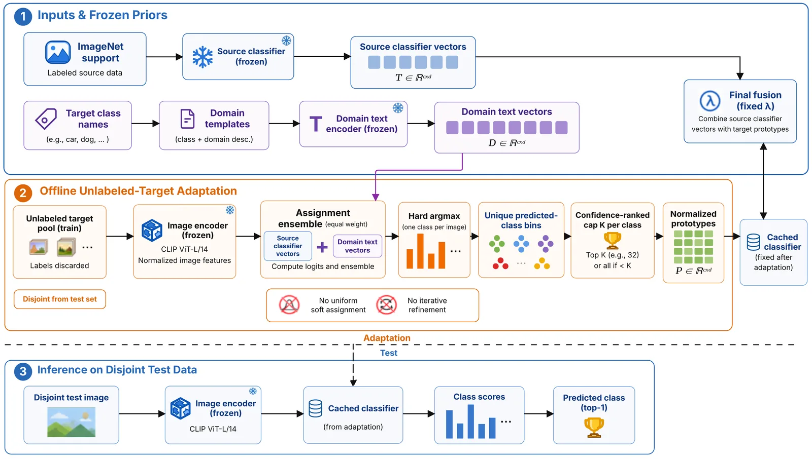

The complete pipeline
Adapt once. Cache the classifier. Evaluate normally.
VDA separates offline target adaptation from evaluation. A disjoint unlabeled pool supplies target appearance; test queries never participate in adaptation.

The core idea
A class name says what an object is. It does not say how that object looks here.
Prompt-tuned classifiers preserve semantic identity, but a target domain can express the same class through a different visual distribution. A forest in a natural photograph does not look like a forest in an overhead satellite image.
VDA estimates that missing target appearance from an unlabeled target-training pool. It forms class-correlated visual prototypes and treats them as conservative corrections to the frozen semantic classifier—not as replacements for it.
Method
Three operations turn an unlabeled pool into a fixed classifier.
The design is intentionally one-pass: no target-side training loop, no repeated refinement, and no query-time adaptation.
01
Partition
Give every target image one predicted class.
Average logits from the frozen semantic classifier and a fixed domain-template classifier, then use hard argmax assignment. Unequal class masses are allowed.
02
Anchor
Keep the strongest supports in each class bin.
Rank assignments by confidence and retain at most K = 32 images per class. Their normalized mean becomes a target visual prototype.
03
Fuse
Correct semantics with target appearance.
Combine every supported prototype with its semantic classifier using one global weight. Unsupported classes keep the original semantic vector.
No target labels
No target-side optimization
No uniform class-prior assumption
No iterative refinement
No access to test queries
Headline result
The primary classifier gains 3.39 points across ten target datasets.
In the matched comparison, VDA improves TCP from 65.82% to 69.21% mean top-1 accuracy and improves nine of ten targets.
- +3.39
- mean points
- 9/10
- targets improved
| Semantic classifier | Base | + VDA | Gain | Improved |
|---|---|---|---|---|
| Zero-shot CLIP | 65.34 | 68.56 | +3.22 | 9/10 |
| TCP | 65.82 | 69.21 | +3.39 | 9/10 |
| MaPLe, 3 seeds | 66.25 ± 0.42 | 69.60 ± 0.22 | +3.35 ± 0.37 | 9/10 |
| PromptKD, 3 seeds | 70.80 ± 0.40 | 73.59 ± 0.28 | +2.79 ± 0.38 | 9/10 |
MaPLe and PromptKD are attachment studies: their semantic outputs are combined with a fixed raw-CLIP visual correction. They demonstrate compatibility, not matched training or inference cost.
What the controls show
Useful visual evidence does not require perfect pseudo-labels.
The ablations isolate the value of class-correlated target appearance from generic target statistics.
Fusion matters.
Direct visual-prototype classification reaches 65.92%, only 0.10 points above the primary semantic classifier. Conservative fusion reaches 69.21%.
Class structure matters.
A common centroid, random assignment, and shuffled prototypes do not reproduce VDA’s gain. Hard class partitioning supplies most of the improvement.
Wrong can still be nearby.
Some class-incorrect supports remain visually close to the true class. The semantic classifier preserves identity while the prototype contributes target appearance.
Adaptation stays cacheable.
When semantic and visual logits share a feature space, fusion reduces to one fixed class vector with ordinary linear inference.
Abstract
Visual Distribution Anchoring for Efficient Prompt Tuning
Prompt tuning adapts vision–language models with few trainable parameters, but existing designs face a trade-off: static textual prompts can overfit source classes, image-conditioned prompts incur per-instance computation, and multimodal tuning modifies the visual branch. We propose VDA (Visual Distribution Anchoring), a training-free target adaptation framework that augments a frozen semantic classifier with class-level visual prototypes estimated offline from an unlabeled target pool.
We first investigate whether such prototypes can be synthesized from class names alone. Although a text-to-centroid mapper accurately reconstructs held-out source prototypes, it does not transfer under dataset shift: class names specify semantic identity but not how classes are visually instantiated in a target domain. An oracle analysis nevertheless confirms that true target prototypes are highly discriminative.
Motivated by this gap, VDA uses frozen semantic and domain-template classifiers to hard-partition unlabeled target images into class-correlated groups. Confidence-ranked image features form normalized visual prototypes, which are fused with the semantic classifier using one global weight. Adaptation requires no target labels, target-side optimization, uniform class-prior assumption, iterative refinement, or access to test queries, and produces a fixed, cacheable classifier.
Controlled experiments show that class-specific hard partitioning, rather than generic target-domain statistics, drives the improvement, and that visually local pseudo-label errors can remain useful despite being class-incorrect. Across ten ImageNet-to-target transfers, the same frozen design improves zero-shot CLIP, TCP, and MaPLe by 3.22, 3.39, and 3.35 points, respectively, improving nine of ten targets in every setting. Its visual correction further improves leakage-free PromptKD by 2.79 points, demonstrating complementarity across zero-shot, source-prompted, multimodal-prompted, and target-distilled classifiers.
Boundaries
Where the evidence stops.
VDA is deliberately simple, but it is not assumption-free. These conditions define the current result and the most useful next questions.
- Target-pool dependence. The unlabeled target-training pool must represent the evaluation domain; small, biased, or incomplete pools can weaken the prototypes.
- Domain description. Assignment uses a manually specified coarse domain template, which adds prior knowledge.
- Visual space. Reported prototypes use OpenAI CLIP ViT-B/16, so the experiments do not establish transfer to arbitrary backbones.
- Difficult classes. A class with few or no predicted supports cannot receive a reliable visual anchor.
- Global fusion. One fixed weight avoids cross-class inconsistency but cannot exploit unusually accurate prototypes independently.
Cite the work
Read and cite VDA.
Use the following citation when referencing the preprint.
Pouya Parsa, Raoof Zare Moayedi, and Seongjin Choi. “Visual Distribution Anchoring for Efficient Prompt Tuning.” arXiv:2607.28967 [cs.CV], 2026. doi:10.48550/arXiv.2607.28967.
BibTeX
@article{parsa2026visual,
title={Visual Distribution Anchoring for Efficient Prompt Tuning},
author={Parsa, Pouya and Moayedi, Raoof Zare and Choi, Seongjin},
journal={arXiv preprint arXiv:2607.28967},
year={2026},
doi={10.48550/arXiv.2607.28967},
url={https://arxiv.org/abs/2607.28967}
}